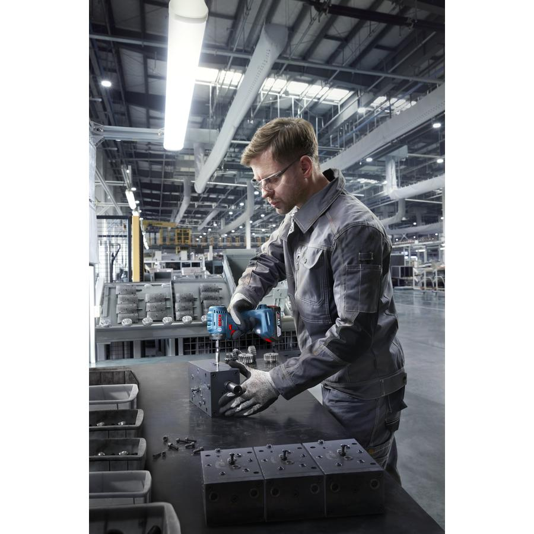
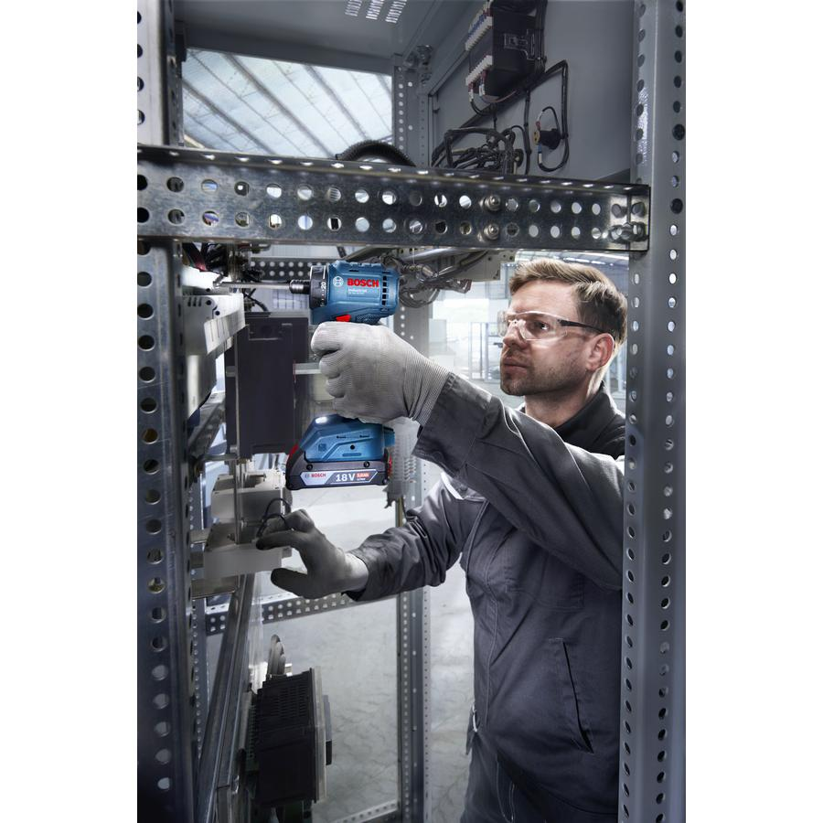
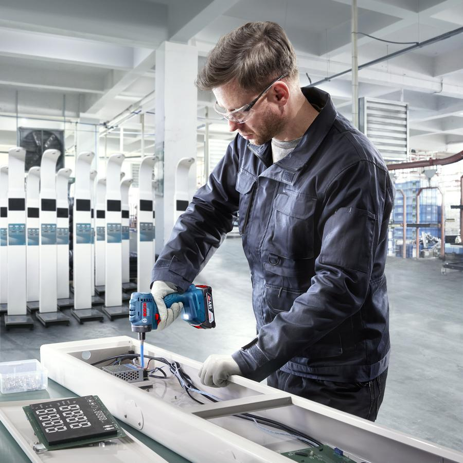
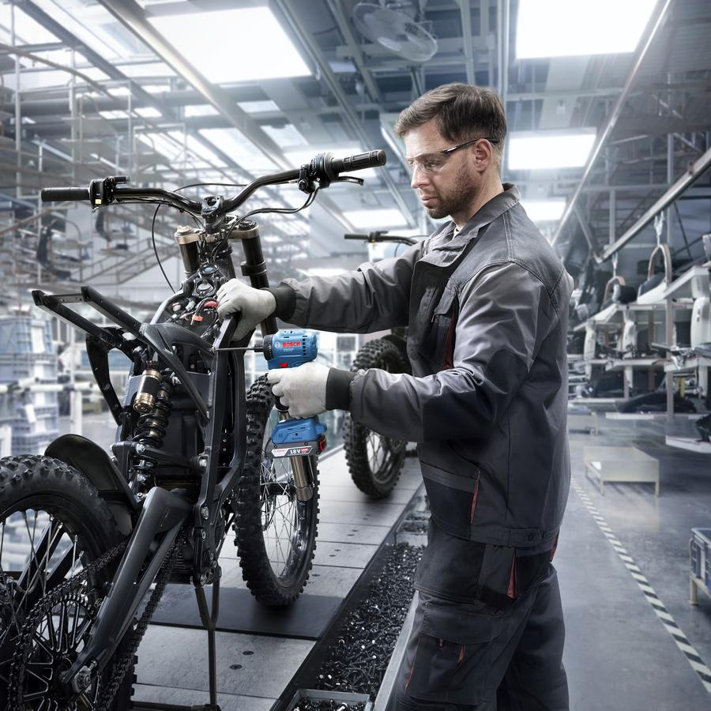
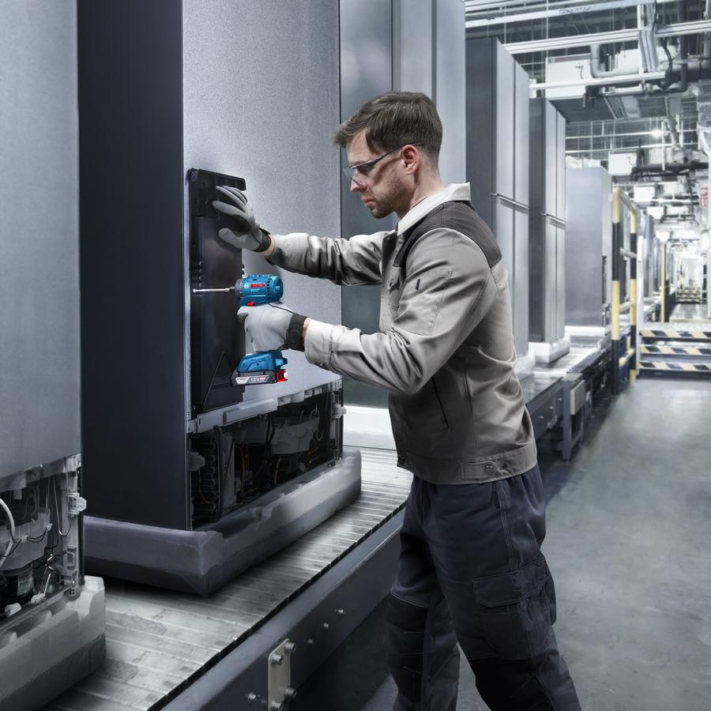
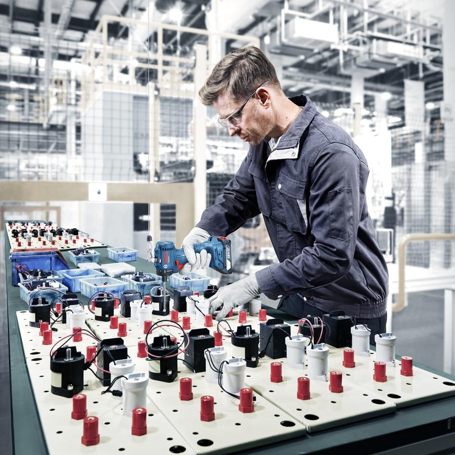
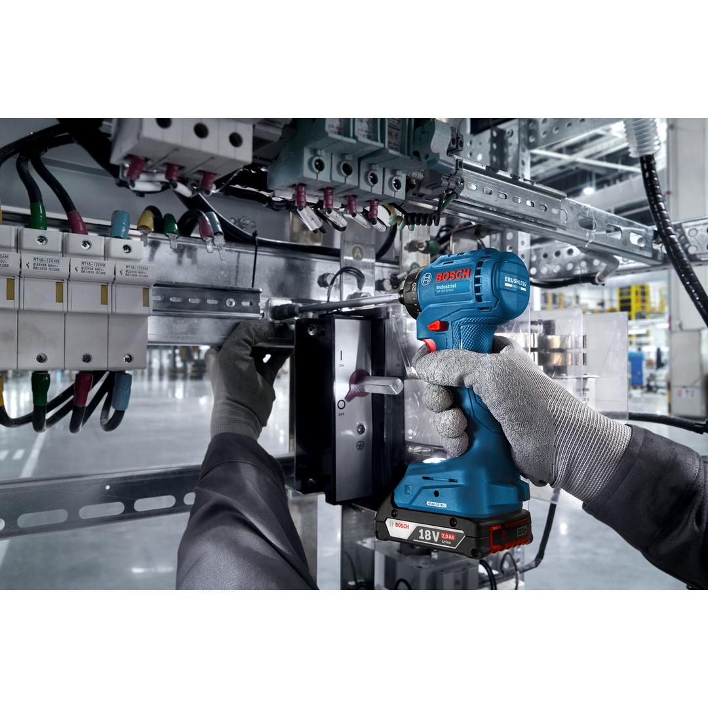
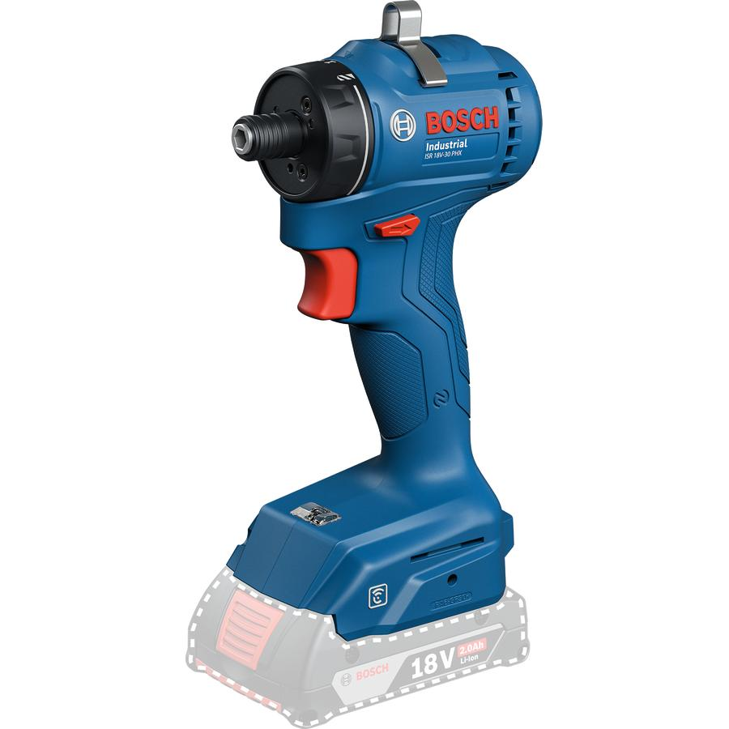

06019M7120








| Description |
When you’re fastening thousands of screws a day in an assembly line, you need a heavy-duty tool you can rely on to deliver long-term, accurate tightening and consistent performance. Our ISR 18V-30 PHX Industrial cordless drill driver offers up to twice the standard speed output consistency and torque accuracy thanks to its special engineering. Equipped with a precision clutch, this durable tool gives you significant performance outcome and extremely high production efficiency, especially in tightening applications for industrial assembly lines. The hex-head universal bit locker ensures a quick and dependable exchange of screw bits. What’s more, this smart drill driver makes keeping track of tools easy with its embedded NFC technology for inventory management and maintenance reminders.
The ISR 18V-30 Industrial cordless drill driver made for machine screw tightening in industrial assembly lines.
|
| Torque, from (hard) |
9 Nm |
| Torque, to (hard) |
30 Nm |
| Torque (hard) |
9 – 30 Nm |
| Speed, from |
0 rpm |
| Speed, up to |
1,400 rpm |
| Speed |
0 – 1,400 rpm |
| Direction of rotation |
R/L |
| Weight |
0.700 kg |
| Bit holder |
1/4'' Hex Uni |
| Connector type |
Shut-off clutch |
| Auto Shutoff Torque, from |
1.6 Nm |
| Auto Shutoff Torque, to |
7.6 Nm |
| Auto Shutoff Torque |
1.6 - 7.6 Nm |
Consistent, reliable & affordable 18V smart solution made for industrial assembly lines Extended lifetime for optimal operation without part failure, industrial grade clutch endurance & switch cycles boosting screw counts Precision clutch with auto-shutoff, in combination with special engineered gearbox enabling 2X* higher speed output consistency and torque accuracy Slim handle, light weight & short head length to minimize operation fatigue and maximize application flexibility